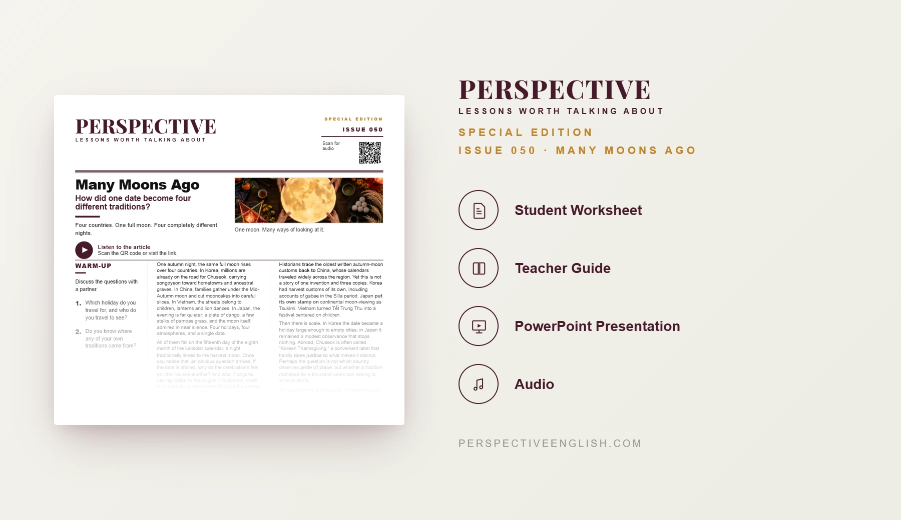

ISSUE 050 · SPECIAL EDITION
Moon Festival ESL Lesson
How did one date become four different traditions?
An advanced C1–C2 ESL lesson exploring how four countries celebrate the same autumn moon date differently, and whether any nation can claim a tradition as its own.
CHOOSE YOUR LEVEL
Also available in Collection 09, featuring Issues 046–050.
LESSON PREVIEW

ABOUT THIS LESSON
About This Moon Festival ESL Lesson
One autumn full moon connects Chuseok in Korea, the Mid-Autumn Festival in China, Tết Trung Thu in Vietnam and Tsukimi in Japan. This C1–C2 lesson explores how the festivals share a traditional calendar date but have developed distinct identities.
Students consider the earliest written customs, Korea's own harvest traditions, Japan's adaptation of moon-viewing and Vietnam's child-centered celebrations. They examine whether origins determine ownership and why labels such as “Korean Thanksgiving” may fail to do justice to a tradition.
The lesson moves from reading and discussion to a museum-curation challenge, advanced idiomatic expressions, a cultural-commercialization debate and an evidence-based opinion-writing task.
FROM THE ARTICLE
WHAT'S INCLUDED
What's Included in Many Moons Ago?
- Magazine-style C1–C2 ESL student worksheet
- Advanced reading and matching audio comparing Chuseok, Mid-Autumn Festival, Tết Trung Thu and Tsukimi
- Five expressions: trace back to, lay claim to, put your own stamp on, do justice to and pride of place
- Five true-or-false questions testing what the article states or implies
- Five discussion questions about changing festivals, cultural identity and ownership of traditions
- You Curate the Gallery: make five museum decisions, anticipate objections and defend how four festivals should be represented
- Language in Context: complete five sentences using the advanced expressions
- Speaking challenge: debate a global brand's “Moon Festival” product range and propose a rule for borrowing cultural traditions
- 200–250 word opinion-writing task addressing the strongest opposing view on whether a country can claim a tradition
- Teacher guide, answer key and model writing
- Ready-to-use classroom presentation
GET THE COMPLETE LESSON
Ready to Teach Many Moons Ago?
Get the complete Many Moons Ago ESL lesson individually, or get Issues 046–050 together in Collection 09.
Secure checkout and instant digital delivery through Payhip.